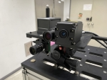
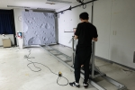
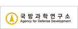
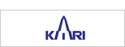
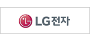
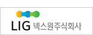
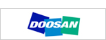
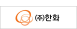

Video Youtube
실내 보행 항법
자율주행과 위치 추정에 활용되는 보행자 추측항법(PDR)을 소개합니다.
Video Youtube
자율주행과 위치 추정에 활용되는 보행자 추측항법(PDR)을 소개합니다.
Gallery
아카이브에 남아 있는 NESL 연구 현장의 일부를 소개합니다.


Research
항법·전자시스템을 중심으로 다양한 이동체의 위치와 자세를 연구합니다.






NESL
웹 아카이브에 남은 자료를 근거로 복구 중인 페이지입니다. 현재 대문과 연구 분야, 강의, 논문 페이지를 복구했으며, 구성원·프로젝트 페이지는 다음 단계에서 연결할 예정입니다.